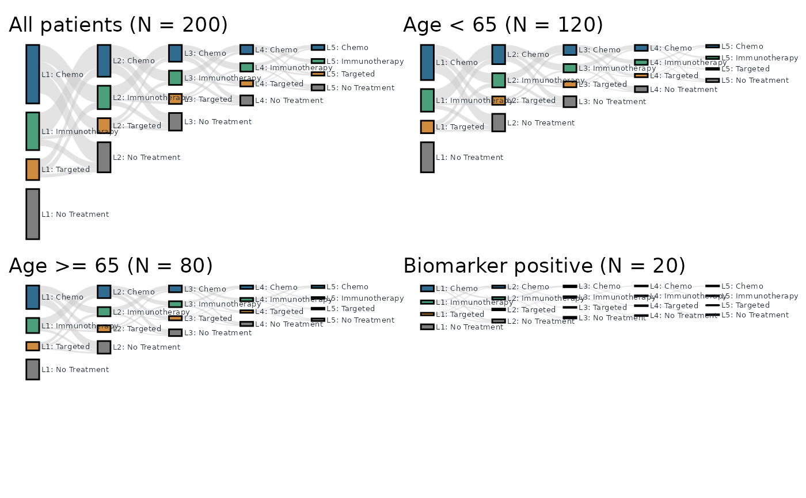
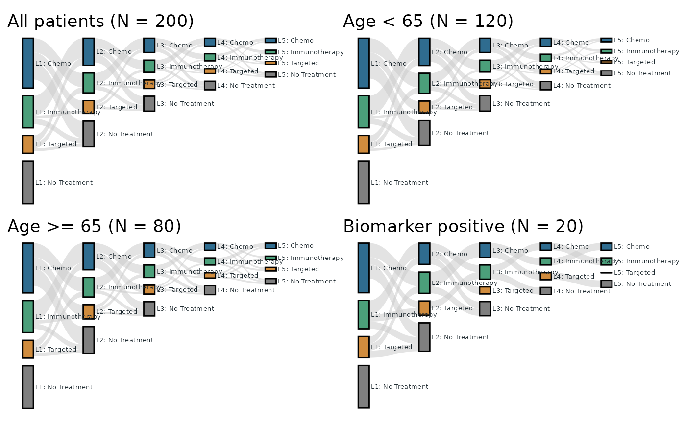

Create multiple Sankey plots from subgroup-specific filters in one call. The function supports scaling strategies across subgroups:
Usage
tfl_plot_sankey_batch(
nodes,
links,
subgroup_specs,
node_id = "id",
node_stage = "stage",
node_label = NULL,
node_value = NULL,
link_source = "source",
link_target = "target",
link_value = "value",
scale_strategy = c("shared_max", "shared_first_stage", "first_stage_normalized"),
scale_reference_subgroup = NULL,
first_stage_max_multiplier = 100,
output_dir = NULL,
save_png = TRUE,
width = 14,
height = 8,
dpi = 180,
bg = "white",
...
)Arguments
- nodes
Node data frame.
- links
Link data frame.
- subgroup_specs
Data frame with subgroup definitions. Recommended columns:
subgroup: subgroup name.filter: expression string applied to bothnodesandlinks.node_filter: expression string fornodesonly (optional).link_filter: expression string forlinksonly (optional).title: plot title override (optional).file_name: output file name (optional).
- node_id, node_stage, node_label, node_value
Node mapping columns passed to
tfl_plot_sankey().- link_source, link_target, link_value
Link mapping columns passed to
tfl_plot_sankey().- scale_strategy
Scale strategy across subgroups:
"shared_max","shared_first_stage", or"first_stage_normalized".- scale_reference_subgroup
Reference subgroup name used when
scale_strategy = "shared_first_stage". IfNULL, the first subgroup insubgroup_specsis used.- first_stage_max_multiplier
Magnification cap used when
scale_strategy = "first_stage_normalized"(default 100). UseInf(orNULL) for no cap.- output_dir
Optional output directory to save PNG files.
- save_png
Whether to write PNG files.
- width, height, dpi, bg
PNG rendering options for
ggsave().- ...
Additional arguments passed to
tfl_plot_sankey().
Value
A list with:
plots: named list of ggplot objects.metadata: data frame with subgroup, scales, multipliers, and output file names.
Details
Shared scale across all subgroup plots.
First-stage normalization with optional magnification cap, then shared scale.
Shared scale anchored to the first-stage span of a reference subgroup.
Examples
# The full analysis set is the same five-line, 200-patient cohort as the
# tfl_plot_sankey() example; three subgroups of decreasing size (Age < 65,
# Age >= 65, Biomarker positive) share its structure. Every cohort
# follows the usual rules: about 30% of each line is "No Treatment", a
# line's total N never exceeds the treated N of the previous line, there
# are no same-treatment transitions, and "L1: No Treatment" is an
# isolated node.
trt <- c("Chemo", "Immunotherapy", "Targeted", "No Treatment")
key <- c("Chemo", "IO", "Target", "NoTx")
active <- c("Chemo", "IO", "Target")
mk_nodes <- function(grp, n) {
data.frame(
grp = grp,
id = paste0("L", rep(1:5, each = 4), "_", rep(key, 5)),
stage = paste0("Line", rep(1:5, each = 4)),
line = paste0("Line", rep(1:5, each = 4)),
treatment = rep(trt, 5),
label = paste0("L", rep(1:5, each = 4), ": ", rep(trt, 5)),
node_n = n,
stringsAsFactors = FALSE
)
}
mk_links <- function(grp, flows) {
g <- expand.grid(s = active, t = c(active, "NoTx"), stringsAsFactors = FALSE)
g <- g[g$s != g$t, , drop = FALSE]
do.call(rbind, lapply(1:4, function(k) {
data.frame(
grp = grp,
source = paste0("L", k, "_", g$s),
target = paste0("L", k + 1, "_", g$t),
value = flows[[k]],
stringsAsFactors = FALSE
)
}))
}
nodes <- rbind(
mk_nodes("ALL", c(
70, 45, 25, 60, 38, 28, 18, 36, 20, 17, 12, 21,
11, 10, 7, 12, 6, 5, 4, 7
)),
mk_nodes("AGE_LT65", c(
42, 27, 15, 36, 23, 17, 10, 21, 12, 10, 7, 13,
7, 6, 4, 7, 3, 3, 2, 4
)),
mk_nodes("AGE_GE65", c(
28, 18, 10, 24, 15, 11, 8, 15, 8, 7, 5, 8,
4, 4, 3, 5, 3, 2, 2, 3
)),
mk_nodes("BM_POS", c(
7, 4, 3, 6, 3, 3, 2, 4, 2, 2, 1, 2,
1, 1, 1, 1, 1, 1, 0, 1
))
)
links <- rbind(
mk_links("ALL", list(
c(28, 10, 20, 8, 14, 4, 24, 8, 4),
c(15, 5, 13, 4, 9, 3, 12, 6, 3),
c(8, 3, 8, 2, 5, 2, 6, 4, 2),
c(4, 2, 4, 1, 2, 2, 3, 2, 2)
)),
mk_links("AGE_LT65", list(
c(17, 6, 12, 5, 8, 2, 14, 5, 2),
c(9, 3, 8, 2, 5, 2, 7, 4, 2),
c(5, 2, 5, 1, 3, 1, 4, 2, 1),
c(2, 1, 2, 1, 1, 1, 2, 1, 1)
)),
mk_links("AGE_GE65", list(
c(11, 4, 8, 3, 6, 2, 10, 3, 2),
c(6, 2, 5, 2, 4, 1, 5, 2, 1),
c(3, 1, 3, 1, 2, 1, 2, 2, 1),
c(2, 1, 1, 1, 1, 1, 1, 1, 1)
)),
mk_links("BM_POS", list(
c(2, 1, 2, 1, 1, 1, 2, 1, 1),
c(2, 0, 1, 1, 1, 0, 1, 1, 0),
c(1, 0, 1, 0, 1, 0, 0, 1, 0),
c(1, 0, 1, 0, 0, 0, 0, 0, 1)
))
)
# Each panel's title states the subgroup condition.
specs <- data.frame(
subgroup = c("all", "age_lt65", "age_ge65", "biomarker"),
filter = c(
'grp == "ALL"', 'grp == "AGE_LT65"',
'grp == "AGE_GE65"', 'grp == "BM_POS"'
),
title = c(
"All patients (N = 200)", "Age < 65 (N = 120)",
"Age >= 65 (N = 80)", "Biomarker positive (N = 20)"
),
stringsAsFactors = FALSE
)
treatment_palette <- c(
"Chemo" = "#2F6C8F",
"Immunotherapy" = "#4B9F7A",
"Targeted" = "#D08C3E",
"No Treatment" = "#7F7F7F"
)
# 1) Shared scale: every plot uses the same axis span, so node heights
# are directly comparable across subgroups -- the smaller subgroups
# are drawn smaller.
shared <- tfl_plot_sankey_batch(
nodes, links, specs,
node_label = "label", node_value = "node_n",
scale_strategy = "shared_max",
save_png = FALSE,
node_treatment = "treatment", node_line = "line",
treatment_palette = treatment_palette,
baseline = "top", link_alpha = 0.55, label_size = 1.8
)
# 2) First-stage normalization: each subgroup is magnified so its Line 1
# column spans the same height -- the shapes (proportions) are
# comparable, the absolute sizes are not. The magnification is capped
# by `first_stage_max_multiplier` (default 100); here the subgroups
# are scaled by about x1.7 / x2.5 / x10.
norm <- tfl_plot_sankey_batch(
nodes, links, specs,
node_label = "label", node_value = "node_n",
scale_strategy = "first_stage_normalized",
save_png = FALSE,
node_treatment = "treatment", node_line = "line",
treatment_palette = treatment_palette,
baseline = "top", link_alpha = 0.55, label_size = 1.8
)
norm$metadata[, c("subgroup", "multiplier")]
#> subgroup multiplier
#> 1 all 1.000000
#> 2 age_lt65 1.666167
#> 3 age_ge65 2.498314
#> 4 biomarker 9.959681
# All patients + the three subgroups on one page (2 x 2), one page per
# scale strategy.
if (requireNamespace("patchwork", quietly = TRUE)) {
patchwork::wrap_plots(shared$plots, ncol = 2)
}

if (requireNamespace("patchwork", quietly = TRUE)) {
patchwork::wrap_plots(norm$plots, ncol = 2)
}
